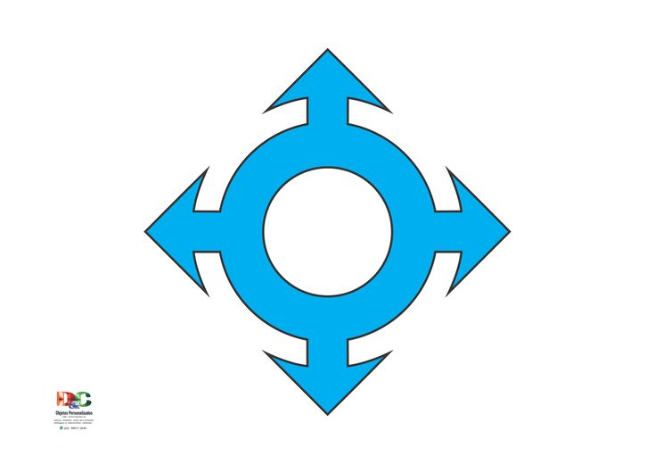

Technical Skills
 Python
Python JavaScript
JavaScript HTML5
HTML5Java
 C
C Git
Git GitHub
GitHubSoftware Engineering Student
PythonJavaScriptHTML5CGitGitHubSoftware Engineering student at PUC/MG, with creative thinking and determination to solve challenges and pursue the best solutions.

Administrative routines, reports, and internal process support.
Mechanical project development with emphasis on CAD and standards.

Specialist in tactical communications and electronic warfare.
Maintenance and automation of 3D printers (hardware & software).
PMO support, schedules, and indicators.
+55 31 99581-4868